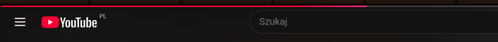
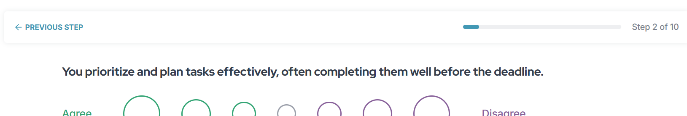

Zasada 1
Pokazuj status systemu (ang. Visibility of system status)
Angielski oryginał
The design should always keep users informed about what is going on, through appropriate feedback within a reasonable amount of time. When users know the current system status, they learn the outcome of their prior interactions and determine next steps. Predictable interactions create trust in the product as well as the brand.
Polskie tłumaczenie
Design powinien na bieżąco powiadamiać użytkowników, o tym co jest wykonywane, za pomocą przejrzystych informacji zwrotnych. Gdy użytkownik zna obecny status systemu uczy się o efekcie końcowym jego wcześniejszych starań i może łatwiej określić kolejne kroki. Przewidywalne interakcje tworzą zaufanie co do produktu jak i do branży.

